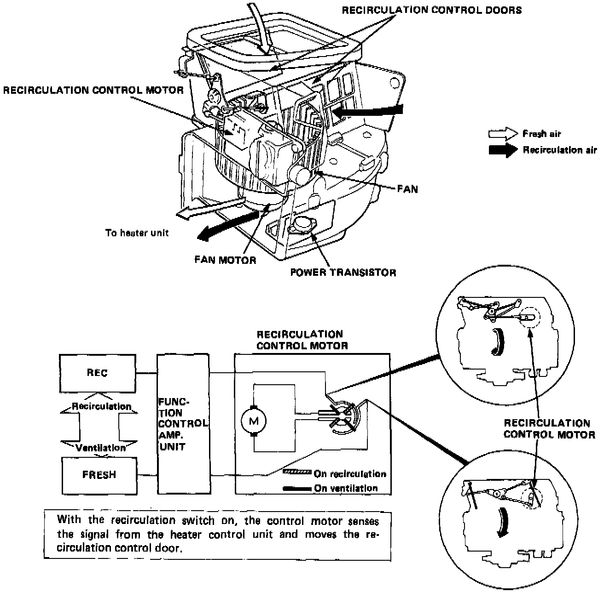

Blower / Recirculation System

BLOWER/RECIRCULATION SYSTEM
The blower motor, fan, and recirculation control door that switches fresh air ventilation/recirculation, are inside the blower housing.
On the bottom of the case, there is a power transistor to change the motor speed activated by the heater fan switch.
A servo motor above the fan activates the recirculation control doors.